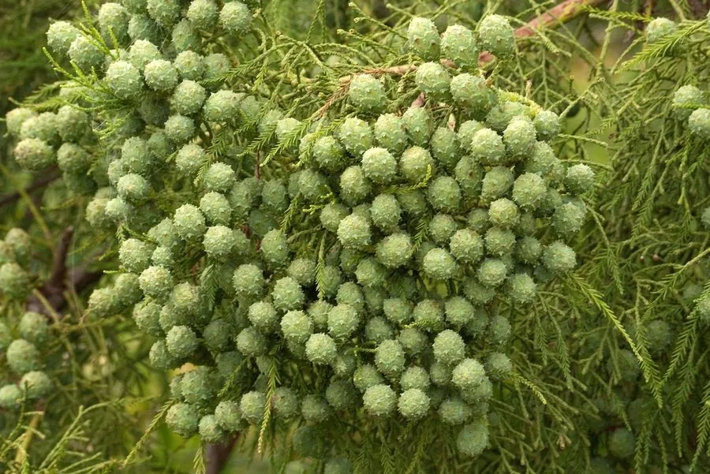

蕨类与裸子植物 · 植物界
水松 Glyptostrobus pensilis

水松是古老的孑遗裸子植物，喜水湿、耐水淹，可生于河岸水边，是研究植物演化的活化石，属国家一级保护植物。
- 分类
- 门裸子植物门纲松纲目松柏目科柏科属水松属
- 栖息环境
- 河岸、水边、沼泽与湿地，喜水湿、耐水淹
- 地理分布
- 中国广东、福建、江西等地，零星野生，各地有栽培
- 保护级别
- IUCN 暂无评估；中国国家一级重点保护野生植物
物种志
水松是柏科水松属落叶或半常绿乔木，高可达 25 m，树干基部常膨大，并生有伸出地面的呼吸根，帮助它在水湿环境中呼吸。树皮褐色、纵裂，小枝有两种：营养枝上的叶为鳞形或条状钻形，生殖枝上的叶较长。雌雄同株，球果倒卵形或椭圆形，成熟时褐色，种鳞木质，种子具翅。
水松是中国特有的孑遗植物，化石记录可追溯到中生代，现野生种群极度稀少，主要分布于广东、福建、江西等地的水边、河岸与沼泽。它喜水湿、耐水淹，常生于浅水或潮湿的土壤中，是优良的护岸与湿地绿化树种。木材轻软，可用于建筑与造纸。由于野生植株稀少、繁殖困难，水松被列为中国国家一级重点保护野生植物，亟待保护与人工繁育。
形态与习性
- 树高可达 25 m
- 呼吸根生于树干基部，伸出地面
- 叶鳞形或条状钻形
- 球果倒卵形，种子具翅
- 生境喜水湿、耐水淹
- 保护国家一级重点保护野生植物
趣味知识
- 水松的树干基部会长出伸出地面的呼吸根，帮助它在水边呼吸。
- 它是中国特有的孑遗植物，化石记录可追溯到中生代。
- 水松野生种群极为稀少，被列为国家一级重点保护野生植物。